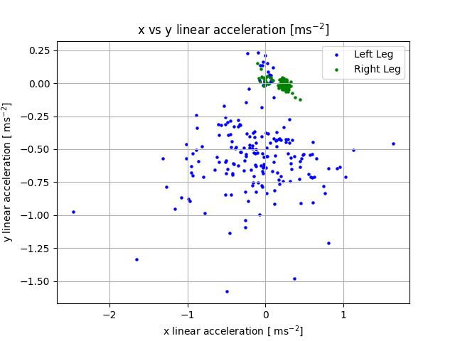
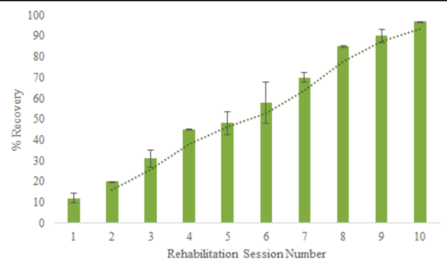

All your your data will be stored here, where you can look back on
your progress throughout your sessions!
X and Y Linear Acceleration

What does this mean?
Looking at the plot, we can compare your left leg and right leg
performance. A tight cluster of values show balance and high
stability, if there are values all around the plot, that means you
were unbalanced.
Progress Over time

Based on the past 7 sessions, you have improved by 17% Keep
at it! This session, you were able to increase your percent recovery
by 3%. Congratulations!!